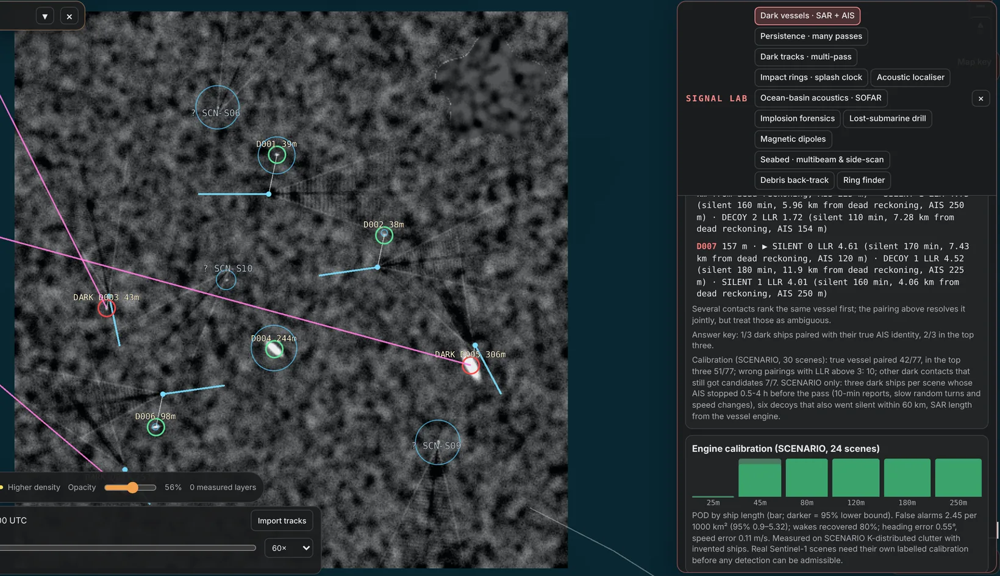
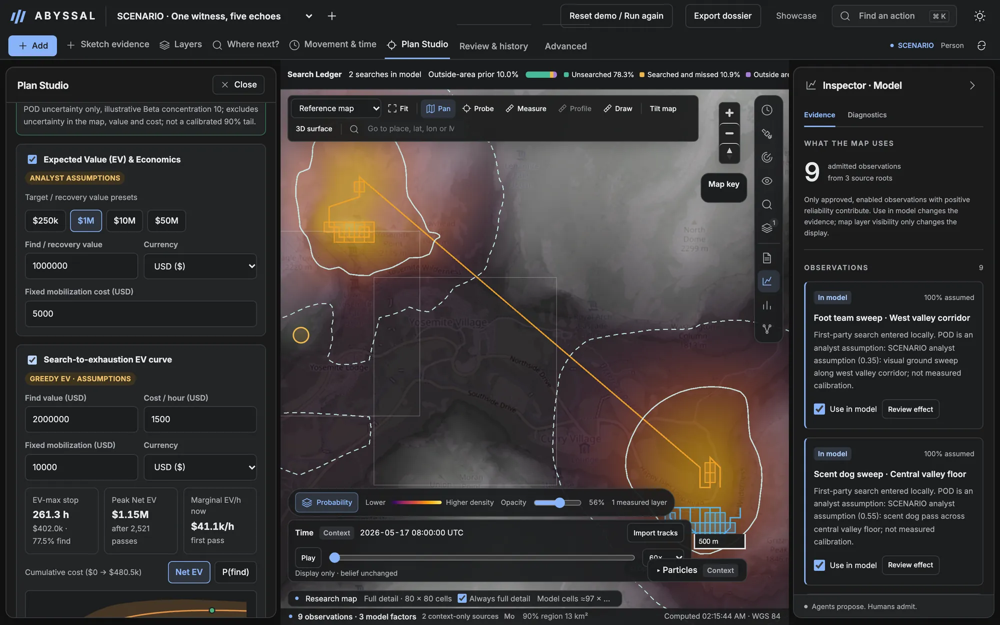
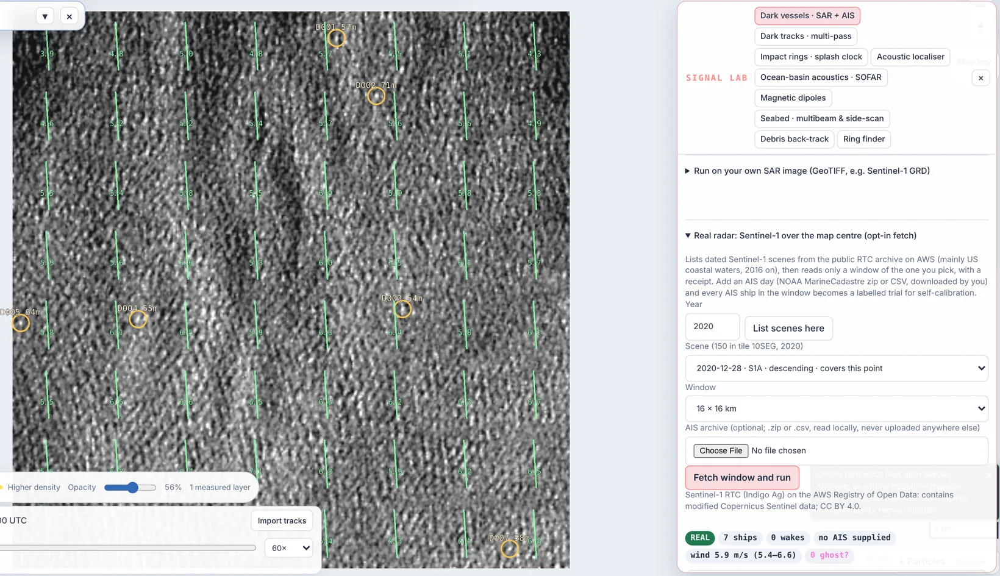
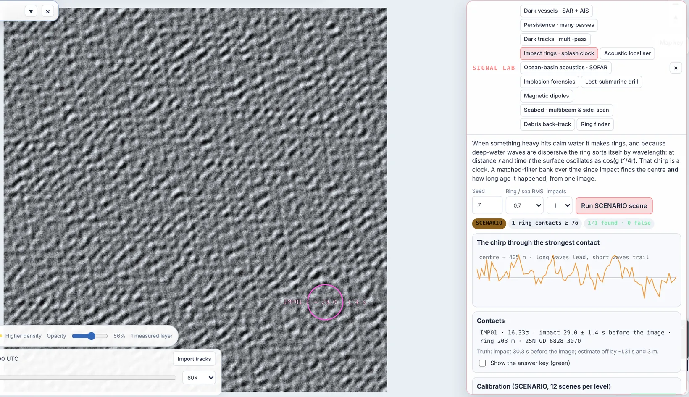
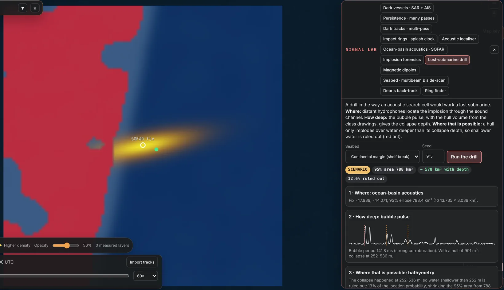
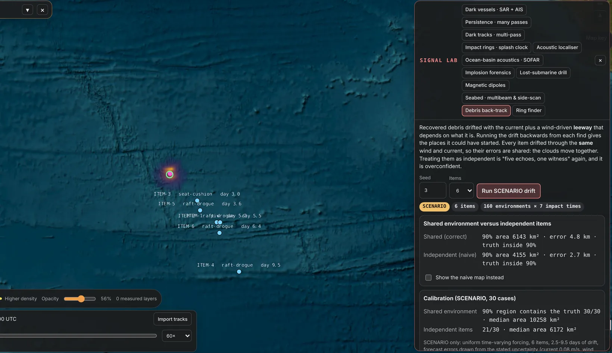

ABYSSAL has two engines. One turns explicit evidence into a probability map. The other turns raw measurements (a radar image, an hour of hydrophone audio, a magnetometer survey) into contacts that a person can review. This round added nine new signal heads to the second engine, and every one of them obeys the same contract and comes in through the same gate.
This page is the whole machine on one sheet, then a tour of the new heads with real screenshots, the physics each one rests on, and what each one measured when it was tested against an answer key.
The machine, in full
hover, focus or tap any boxInputs are embedded with receipts and tagged REAL or SCENARIO. Measurements go up the left tower through fourteen signal heads; claims go up the right tower into the belief engine. The only bridge between them is the admission gate. Decisions and outputs come out of the top, and the interfaces on either side are where people lay data on and steer.
The same shape, a different kind of attention
The Transformer paper drew a model as a stack of identical blocks, each attending to its input in parallel heads, with residual sums and a normalisation, and a softmax on top. ABYSSAL has the same skeleton, but each head attends to a different physical channel, and the sum is Bayes' rule.
The analogy is structural, not a claim that ABYSSAL is a neural network: nothing here is learned from data except the calibrations, and those are measured, not trained.
| Transformer | ABYSSAL |
|---|---|
| Input embedding | Receipt embedding: URL, time, SHA-256, licence, provenance root |
| Positional encoding ⊕ | Origin encoding ⊕: REAL or SCENARIO, end to end |
| N× encoder layers, multi-head | 14 signal heads sharing one contract |
| Cross-attention | The admission gate: calibrated, then admitted by a person |
| Add & Norm | Σ log-likelihoods plus the log prior, normalised; outside-area mass kept |
| Linear + softmax | Decide: expected information gain, allocation, stop rule |
| Output probabilities | The belief map, the next search, the Evidence Map, the dossier |
One contract, many heads
why every engine is the same kind of intelligenceA radar wake detector and a bubble-pulse analyser have nothing in common physically. They are still the same kind of thing, because each one answers the same three questions in the same order, returns the same kind of object, and has to pass the same gate. No head is cleverer than another: each is exactly as trustworthy as its calibration says, and no more.
A forward model of the physics: if the target were at \(x\), the data would look like \(d = f(x,\theta) + \varepsilon\). Kelvin wakes, dispersive ring waves, sound in the SOFAR channel, a dipole in Earth's field, leeway drift, an oscillating bubble.
Inference inverts the model: \(\hat x = \arg\max_x \log p(d\mid x,\theta)\) by matched filters, CFAR, Kalman filtering with optimal assignment, Levenberg–Marquardt, cepstra or a likelihood grid, always with an uncertainty attached.
Calibration against an answer key: detection rate, false-alarm rate and interval coverage with Wilson and Poisson bounds. A head that has not been measured can make contacts, never admissible evidence.
Receipts on everything: inputs by SHA-256, model version, code commit. Every head's output is a contact that reproduces bit for bit, and only the gate turns a contact into evidence.
Where the maps come from
opt-in, fetched on request, each with a receipt- NOAA ETOPO 2022 (30″)
- GEBCO and EMODnet depth, source and quality
- NOAA BlueTopo (US survey bathymetry, windowed)
- Natural Earth 1:10m coastline
- NOAA EMAG2v3 and BGS magnetic anomalies
- Scripps marine free-air gravity
- Open-Meteo 10 m wind and marine currents
- IGRF-14 main field (computed)
- Sentinel-1 RTC on AWS (windowed range reads)
- NASA GIBS: fires, sea temperature, night lights
- RainViewer observed radar
- OpenStreetMap and OpenSeaMap basemaps
- ADS-B via adsb.lol and OpenSky
- AIS via Digitraffic, and NOAA MarineCadastre day files
- USGS real-time earthquakes
- Satellite element sets (SGP4)
Where people lay data on
every interface writes drafts, never belief Sketch evidencepoints, bearings, range rings, corridors, area statements
Sketch evidencepoints, bearings, range rings, corridors, area statements
 Layersopt-in public data with receipts, context by default
Layersopt-in public data with receipts, context by default
 Evidence Mapeach source's influence in bits, provenance graph, exact undo
Evidence Mapeach source's influence in bits, provenance graph, exact undo


Signal Labfourteen heads, SCENARIO answer keys or your own data Where next?searches ranked by expected information gain
Where next?searches ranked by expected information gain


Plan Studioallocation, value and the stop rule Movement & timedrift, walking and leeway on a shared clock
Movement & timedrift, walking and leeway on a shared clock
 Ops consolelive air, sea, orbit and weather: context only
Ops consolelive air, sea, orbit and weather: context only
The new heads
each tested against an answer key; real data where the sandbox could reach itReal Sentinel-1, and a detector that calibrates itself
The dark-vessel head now reads real radar. Pan to US coastal water, list the Sentinel-1 scenes over that point (it checks which ones actually cover it), and it reads just a 16 × 16 km window by HTTP range request, on a lon/lat grid, with the incidence angle from the scene's own raster and the ground-track heading from the product footprint.
Add a NOAA AIS day file and every ship that was broadcasting becomes a free labelled trial: an echo is a hit, silence a miss. Pooled across a case, that measures the detector's detection rate by ship length on your sensor, the only route to a REAL calibration.
real Runs on real Sentinel-1 scenes off San Francisco. not yet Self-calibration has not been run on real AIS: the AIS archive host was unreachable from the build sandbox.

Wind from the radar itself
A detector's miss means nothing without the sea state: calm water shows wakes and slicks; a gale washes them out and fills the image with clutter. So every calibrated window now gets its wind, from the image, with no weather service.
Speed comes from inverting the C-band model function per 2 km block; direction from the orientation of wind streaks (the averaged structure tensor of the band-passed image), reported only when the streaks are coherent and always 180° ambiguous. Below Sentinel-1's noise floor it says so and gives only an upper bound.
The real readings are not yet checked against NOAA buoy 46026, which sits at the window centre.
Persistence: what is always there
A ship is a contact in one pass. A platform, a turbine or a moored buoy is a contact in nearly every pass, at the same spot. The persistence head reads up to twelve passes on one grid, clusters contacts across them, and asks how likely it is that unrelated ships and clutter would land there that often:
A candidate in a crowded neighbourhood is an anchoring berth, not a structure. The per-pixel median of all passes shows what stays: moving ships vanish.
real Santa Barbara Channel, eight passes 2019–2020: exactly two fixed contacts, about 100 m from where Platforms Hondo and Harmony stand (to be checked against BOEM's list), and 188 transients.

Who could the dark ship be?
A vessel that switches off its transponder still exists: its last reports say where it was, how fast and how long. For each dark radar contact, every vessel that fell silent in the three hours before the pass is tested for reach, for the miss from dead reckoning (uncertainty growing with silence) and for length, scored as a log-likelihood ratio against "an unrelated vessel":
A joint Hungarian pairing gives one vessel to one contact. The length test is pixel-aware: at 20 m pixels a 20 m boat looks 55 m long.
Leads to check, never identifications. Three ships going dark together inside one scene are genuinely hard to tell apart.
Dark tracks across passes
Dark detections are linked across passes by Kalman filters that mix a transit and a loiter model, scored against the density of new vessels plus clutter, and assigned optimally. A detection with no wake must line up with two others before it counts. A pass that covered a track and saw nothing lowers it, by exactly \(\log(1-P_D)\), as a searched area does. It flags loitering, rendezvous and possible identities.

Impact rings: where, and how long ago
An impact excites every wavelength and deep water sorts them: long waves run ahead, short ones trail. At distance \(r\) and time \(t\) the surface oscillates as
so a single image carries a clock. A quadrature matched-filter bank over time since impact recovers the centre and the time together.

Ocean-basin acoustics
Sound in the deep ocean is trapped in the SOFAR channel and crosses basins. This head locates an implosion or explosion from hydrophones thousands of kilometres apart: geodesic paths through a latitude climatology of channel speed, the origin time integrated out analytically, a shared speed error as a rank-one covariance term, and bearings from three-sensor triads. Land blocks paths. A silent station behind a continent is explained; a silent station on open water counts against a location.

Implosion forensics: the bubble clock
When a hull collapses, or a charge goes off, the gas left behind rings: a primary pulse, then bubble pulses at a nearly fixed interval. That interval is the Rayleigh–Willis period of the bubble:
The period fixes only \(V^{1/3}/\sqrt{P}\): a small hull shallow and a large hull deep ring alike. Give it the hull's internal volume and it returns the collapse depth, and so the least depth of water where the loss can have happened. The period is read envelope first and corroborated by the cepstrum or a second pulse.
Calibrated on SCENARIO recordings only. With a single corroboration the interval covers just 11 of 16, and the panel says which kind you have.

Deeper means more pressure, a smaller bubble and a shorter period. The orange band is every hull that rings at this period, across the unknown rebound fraction; the blue bar is the depth range the stated volume allows. That range is what a search can use: the hull went down where the sea is at least that deep.
The lost-submarine drill
How an acoustic search cell would work a lost submarine. Where: the ocean-basin head locates the implosion. How deep: the bubble pulse and the hull volume give the collapse depth. Where that is possible: a hull only implodes after sinking past its crush depth, so the loss was over water at least that deep, and shallower water is ruled out.
SCENARIO only, with synthetic bathymetry. Depth helps only where the location region includes water shallower than the collapse.

Magnetic dipoles: position, depth, moment
A compact ferrous object (an engine, an anchor, a landing gear) is a magnetic dipole sitting in Earth's field. The head fits the total-field anomaly
by Levenberg–Marquardt, with the IGRF-14 main field, a regional trend and per-line levelling offsets, and chooses induced or remanent magnetisation by BIC. Depth comes with an interval.

Something proud of the seabed
Multibeam: a median filter wider than any target follows the seabed, and whatever stands proud of it is measured for height, footprint and shape. Side-scan: a bright highlight followed by an acoustic shadow, whose length gives the height, \(H = hL/(x+L)\). Real US bathymetry comes from NOAA BlueTopo by windowed range reads, with the tile's published hash and the window's own.
real One contact 22 m high, 364 × 255 m, about 1.3 km from the charted position of the Andrea Doria (sank 1956).

Debris back-tracking
Recovered debris drifted with the current plus a wind-driven leeway that depends on what it is. Running each find backwards gives the places it could have started. The trap is treating finds as independent: they all drifted through the same uncertain wind and current, so the head shares each environment realisation across items, multiplying inside a realisation and averaging across them. It is the five-echoes problem again, in fluid form.

The ring finder, the TDOA localiser and the wake reader
Three heads came first and are written up in Part 6, Signals from the deep: the dark-vessel detector with Kelvin-wake physics and the radar's azimuth shift; a hydrophone localiser for a few stations with a correlated error model and a χ² alarm for a mispick; and a matched-filter ring finder for debris rings, crater rims and slick rings.
They share the contract too, which is why the new heads could be added in days: the gate, the receipts and the calibration harness were already there.

The calibration board
what each head measured, and on what| Head | What it measures | Calibration | Real data so far |
|---|---|---|---|
| SAR vessels & wakes | ships, heading, speed, dark vs AIS | POD ≥ 0.89 lower bound at 80 m+; 2.45 FA / 1000 km² | Sentinel-1 off San Francisco |
| Self-calibration | detection rate by length and wind, on your sensor | brackets the answer key 5/5 classes | awaits a real AIS day |
| Wind from radar | 10 m wind speed, streak direction | 0.56 m/s median; 0/20 invented directions | two windows off San Francisco |
| Persistence | fixed, recurring, transient | 140/142 structures; 0 false fixed | Santa Barbara Channel, 8 passes |
| Who went dark? | candidate identities for dark contacts | 42/77 paired; 51/77 top three | none yet |
| Dark tracks | links, loitering, rendezvous | 0.80 correct links; 24/24 rendezvous | none yet |
| Impact rings | centre and time since impact | 2.3% time error; 25/25 coverage | none yet |
| SOFAR basin | event location across an ocean | 4.9 km median; 37/40 coverage | none yet |
| Implosion forensics | bubble period, size against depth | 0.75% error; 27/30 strong coverage | none yet |
| Magnetic dipole | position, depth, moment | 0.95 POD; 3 cm depth | none yet |
| Seabed & sonar | relief and shadow contacts | 47/48 wrecks; 58/64 side-scan | NOAA BlueTopo, Andrea Doria |
| Debris back-track | where finds entered the water | 30/30 coverage, shared environment | none yet |
Every calibration above is SCENARIO: measured against simulators with known answers, which proves the mathematics but not a real sensor. Nothing a head produces enters the belief map on its own: heads make contacts, and automatic fusion of calibrated heads into belief is deliberately parked until real calibrations exist. ABYSSAL does not build tools to detect or track operating submarines; finding a lost one is in scope, hunting a working one is not. The whole thing is a prototype on one machine, not yet validated against real operational outcomes.
Signals from the deep
The first three heads, the scope line, and why a submerged wake is invisible to radar.
Building it honestly
The gate, the receipts and the calibration discipline that this page rests on.
All nine parts and the labs
22,474 words and 13 interactive labs, from the tour to the arithmetic of not finding.